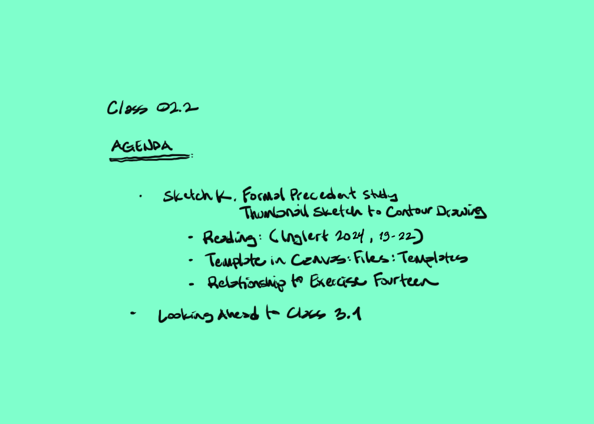

Lecture Preparation
Eric Todd Inglert, AIA
04 Sep 25
AE1013

Today’s Agenda
Formal Precedent Study Thumbnail Sketch to Contour Drawing
 Formal Precedent Study Thumbnail Sketch
to Contour Drawing
Formal Precedent Study Thumbnail Sketch
to Contour Drawing